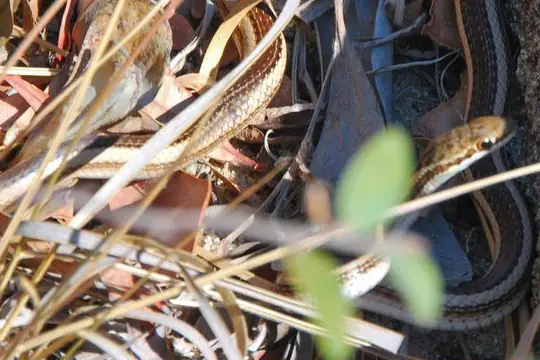
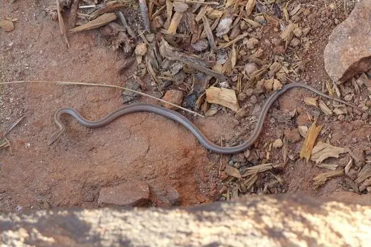
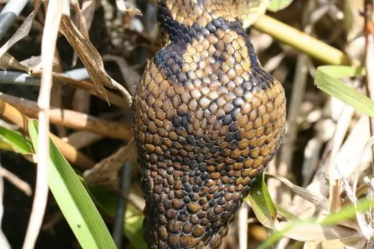
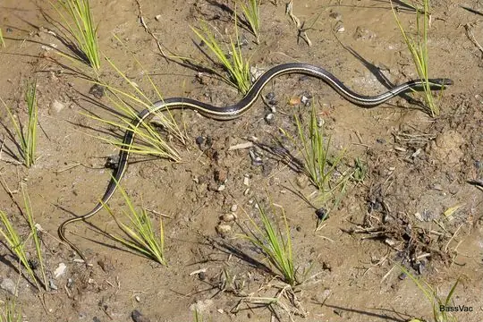
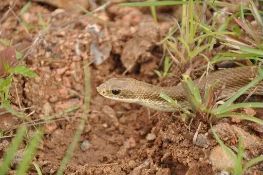
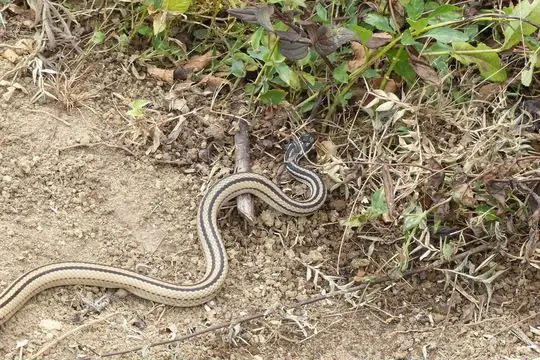
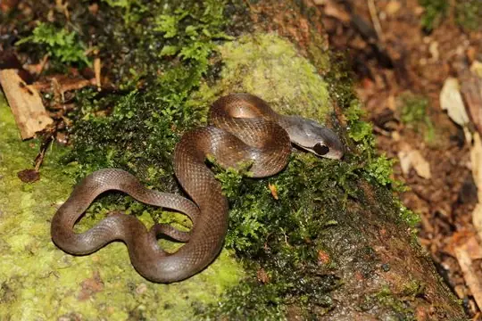

Snakes around Antananarivo
Antananarivo, Madagascar · 18.91°S, 47.54°E
Antananarivo is a city in Antananarivo, Madagascar. 14 snake species are recorded in Antananarivo in SnakeList.
- 14species
- 14non-venomous
- 4families
- 1found only here
These are the snakes of Antananarivo, not of Antananarivo itself. SnakeList records snakes by state or province, not by city, so this page lists the 14 species recorded anywhere in Antananarivo, the state or province Antananarivo is in (worked out from the city’s map position). Many of them may not live in or near the city.
Most widely recorded
The species here that have research-grade iNaturalist records in the most places across their whole range - not just in Antananarivo. That shows how often people have photographed them, not how many live here.
 Madagascar Night SnakeMadagascarophis colubrinus
Madagascar Night SnakeMadagascarophis colubrinus
Bernier's Striped SnakeDromicodryas bernieri
Pencil SnakeMimophis mahfalensis
SanziniaSanzinia madagascariensis
Lateral Water SnakeThamnosophis lateralis
Blonde Hognose SnakeLeioheterodon modestus
Four-striped SnakeDromicodryas quadrilineatus
Forest Water SnakeThamnosophis infrasignatus
Venomous and non-venomous
Venomous: 0Non-venomous: 14
Snake families
Found only here
Recorded in no other state or province or country in SnakeList’s data. That may mean it lives only here, but it can also mean it has not been recorded elsewhere yet.
- Andasibe Blind Snake Madatyphlops andasibensis
Habitats (rough estimate)
How many of its living snakes have each kind of habitat in SnakeList’s estimate. That estimate comes from every country, state and province where each snake is recorded - not from a survey of Antananarivo, and not checked species by species.
Who described them
The scientists who first described its most widely recorded snakes, and when.
- Madagascar Night Snake Madagascarophis colubrinus -
- Bernier's Striped Snake Dromicodryas bernieri -
- Pencil Snake Mimophis mahfalensis -
- Sanzinia Sanzinia madagascariensis -
- Lateral Water Snake Thamnosophis lateralis -
- Blonde Hognose Snake Leioheterodon modestus -
- Four-striped Snake Dromicodryas quadrilineatus -
- Forest Water Snake Thamnosophis infrasignatus -
Names and dates come from SnakeList’s reviewed species accounts; the others are looked up on Wikidata (CC0) when this page opens.
Nearby cities
The closest cities in SnakeList’s city list, as the crow flies.
- Toamasina 214 km · Toamasina, Madagascar
- Nacala 875 km · Nampula, Mozambique
- Moroni 924 km · Andjazîdja, Comoros
- Nampula 975 km · Nampula, Mozambique
- Port Louis 1,053 km · Rivière Noire, Mauritius
- Beira 1,336 km · Sofala, Mozambique
- Blantyre 1,374 km · Blantyre, Malawi
- Chimoio 1,477 km · Manica, Mozambique
All 14 species of Antananarivo
- Andasibe Blind Snake Madatyphlops andasibensis
- Bernier's Striped Snake Dromicodryas bernieri
- Blonde Hognose Snake Leioheterodon modestus
- Boulenger's Forest Snake Compsophis boulengeri
- Eastern Rainforest Smooth Snake Liopholidophis dolicocercus
- Forest Water Snake Thamnosophis infrasignatus
- Four-striped Snake Dromicodryas quadrilineatus
- Gold-collarcd Snake Liophidium rhodogaster
- Lateral Water Snake Thamnosophis lateralis
- Lined Forest Snake Compsophis infralineatus
- Madagascar Night Snake Madagascarophis colubrinus
- Pencil Snake Mimophis mahfalensis
- Sanzinia Sanzinia madagascariensis
- Six-lined Water Snake Liopholidophis sexlineatus
No snake here matches that.